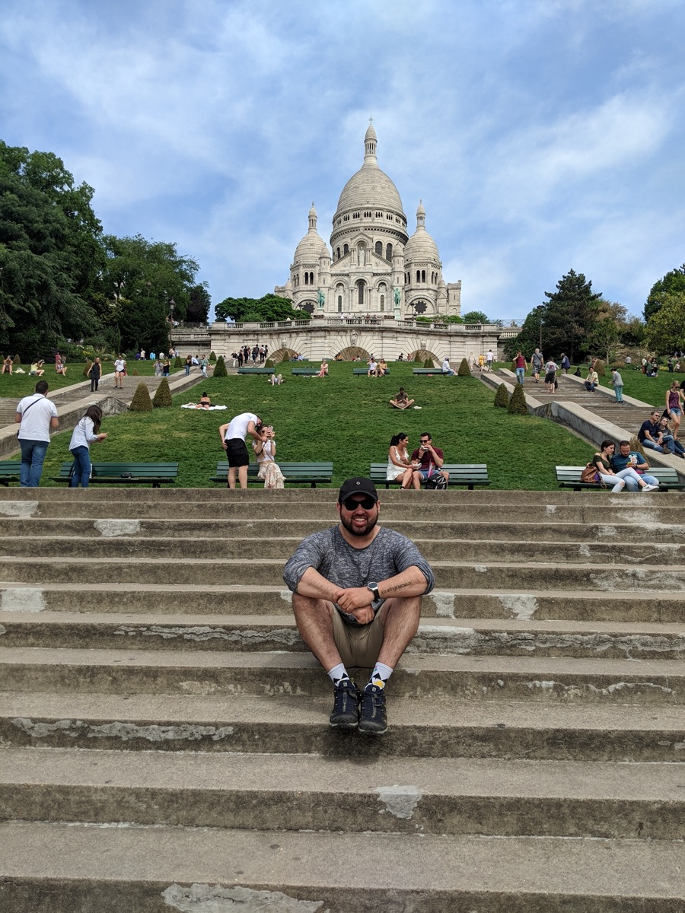
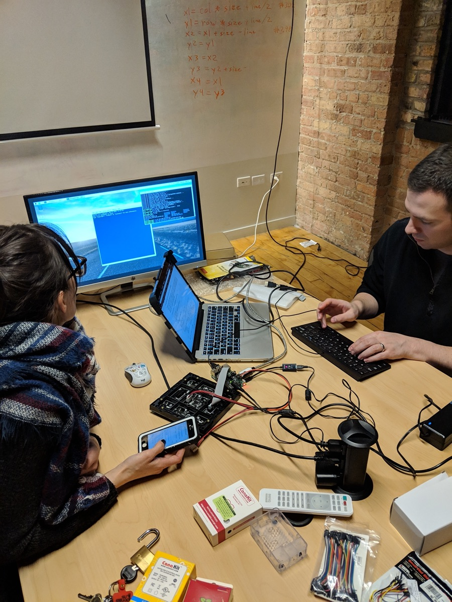

I’m a technical problem solver who likes making technology easier to use and understand.
Whatever the problem, my goal is the same: find out what’s really going on and make sure the person walks away understanding it. I can also walk people through technical issues in Spanish.
My career started in the field, supporting Google and Oculus products. Training account teams on new technology and keeping live displays running taught me to solve problems fast and explain them clearly. Seeing how those companies build products made me want to build too, so I went through a full stack bootcamp and a Rails and React apprenticeship. Now I specialize in escalated technical support, where I can help someone at the user level and still understand the systems underneath.
AI has become a big part of how I work. I use it every day to dig into problems faster and think more clearly, and I’m building my own apps and tools with it, including ones that automate research and analysis. I’m most interested in taking something complicated and making it practical for people who aren’t technical.
I’m a Chapter Director at Techqueria Chicago, a nonprofit supporting Latino professionals in tech, and I’m passionate about helping others grow in this field. I help keep the chapter running, but what I enjoy most is watching people find a space where they belong and make connections that move their careers forward. I also contribute to the Chicago Tool Library’s open source Ruby on Rails app.
If you’re working on something interesting, or hiring for technical support or platform roles, I’d like to hear from you.
Escalated support across platforms and systems, from authentication and access to devices and data issues. I find the root cause and explain the fix clearly, in English or Spanish.
Building web applications with Ruby on Rails, React, JavaScript, and SQL, and integrating RESTful APIs.
Building apps and tools with AI models and APIs, including ones that automate research and analysis.
Worked between departments, retail partners, and technical teams to deliver projects and resolve issues on time.
Chapter Director at Techqueria Chicago, coordinating events, volunteers, and partnerships for Latino professionals in tech.
HOBBIES

IT FEELS GOOD TO BE LOST IN THE RIGHT DIRECTION
Traveling is one of my biggest passions. I try to travel to a new place every year. I like to submerge myself in the culture and have new experiences.

LIVE LIFE TO THE FULLEST
I try to be open minded about new concepts or activities. I will always try something at least once. I enjoy a lot of outdoor activities and don't shy away from a little risk.

FUN PROJECTS
I enjoy working on team projects when I have free time. Working in a team lets me bring out my creative side. This also lets me explore possibilities that I may have not thought of if working alone.
GET IN TOUCH
- Chicago, IL
- francisco.gonz0906@gmail.com